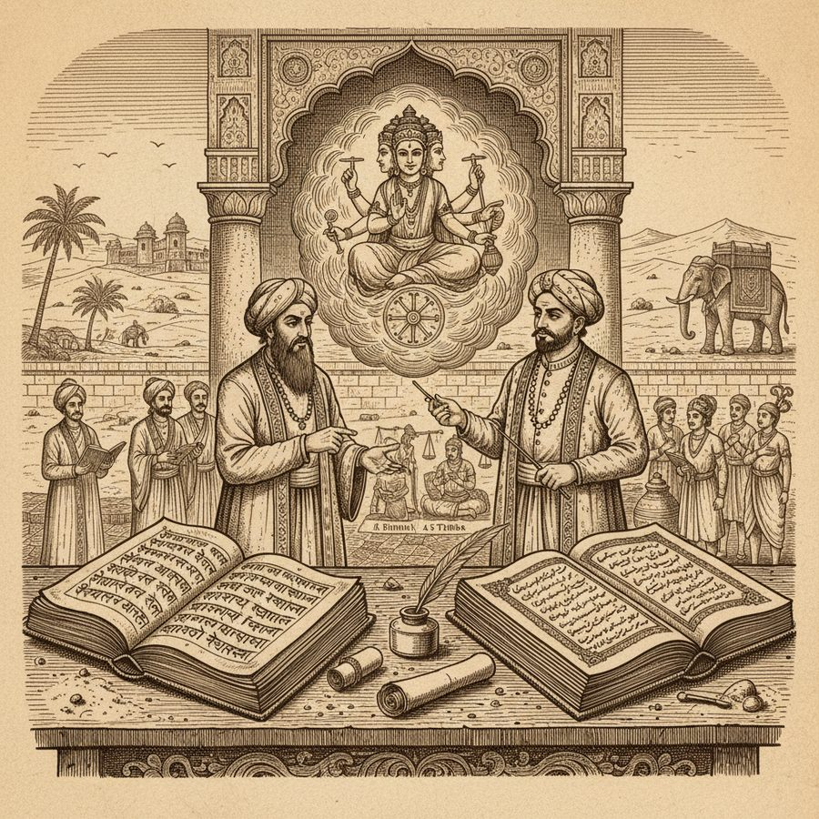
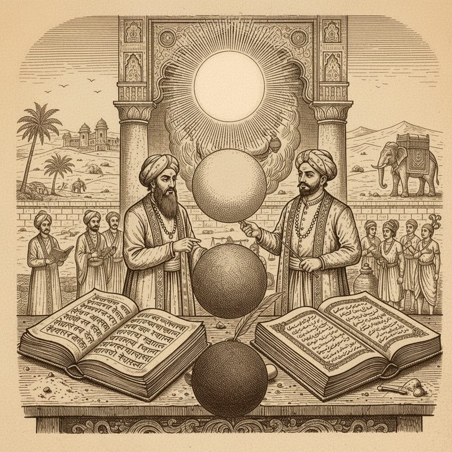
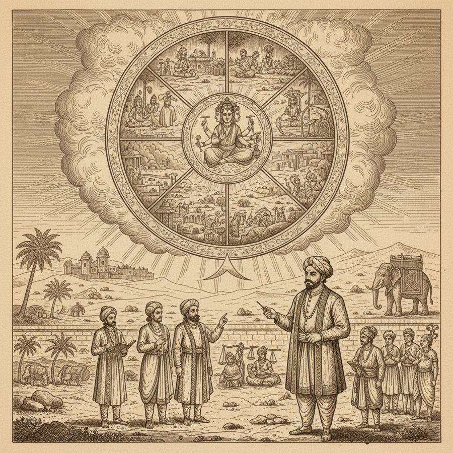
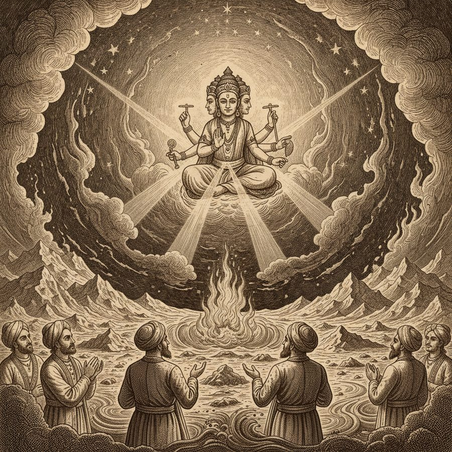
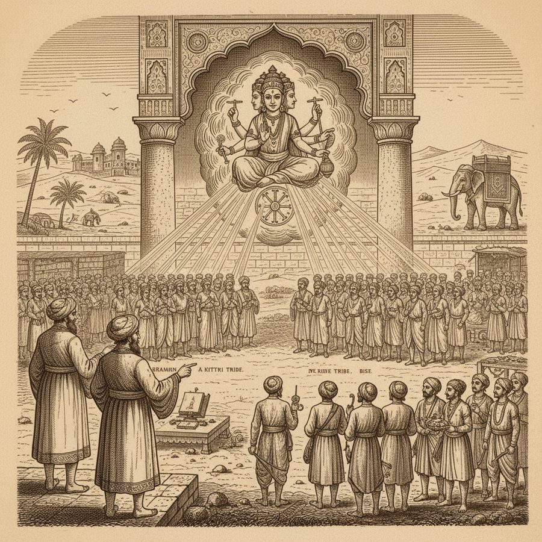
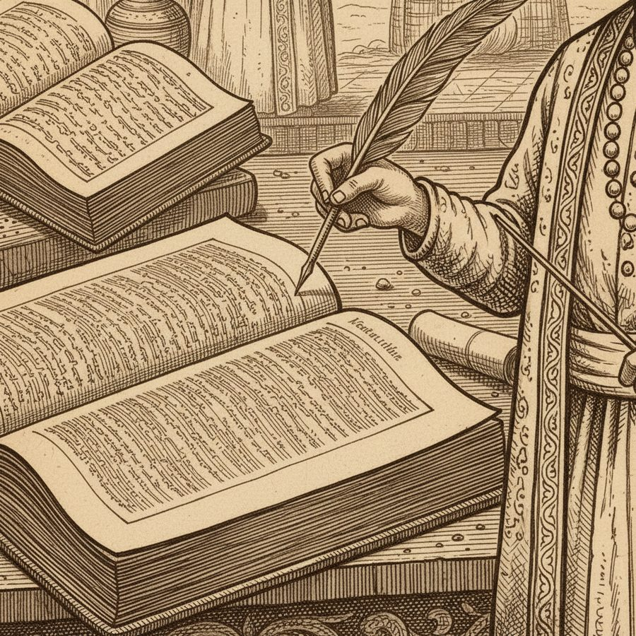

The Four Ages of the World — Time as a Wheel
Four vast ages, a world of creation, and the chance remark that all history is a wheel turning back on itself.
This volume opens not with armies but with time itself. Ferishta, setting out the Hindoos' own account of their origin, reports that they divide the world into four grand periods or jugs (yugas): the Sat Jug — fourteen million four hundred thousand years of pure felicity, when men lived a hundred thousand years and there was 'nothing but truth, religion, happiness, peace, plenty, and independence'; the Treta Jug of a million years, when men lived ten thousand and truth was three parts in four; the Duapur Jug of seventy-two thousand years, half truth; and the Cal Jug — our own age — of thirty-six thousand years, in which 'three fourths of the composition of man consisted of falsehood, and only one fourth of truth,' and a man's span is a hundred years. When the Cal Jug is finished, the Sat Jug begins again: time revolves in eternal succession. Then Brimha creates the world — out of nothing — and divides mankind into the four tribes of Brahmin, Kittri, Bise and Sudur, a division 'strictly maintained to this day.' The whole wondrous structure rests, Ferishta notes, on the Mahabarit — 'the great war,' the Mahabharata — which Abul Fazil translated into Persian in Akbar's reign. It is a reminder that this 'history' of the earliest Hindu kings is a mirror of legend, not a chronicle.
Figures: Brimha (Brahma), Ferishta, Abul Fazil, the four tribes
The story as a comic






Why it stands out
It frames the entire book. Before the Ghaznavids and the Delhi Sultans, before battles and crownings, Ferishta sets out a Hindu cosmology of collapsing ages — a vision in which the present is the worst of four worlds and every ruin is a return. It shows an 18th-century translator and a 16th-century Persian at work, respectfully describing a belief system none of them shared.